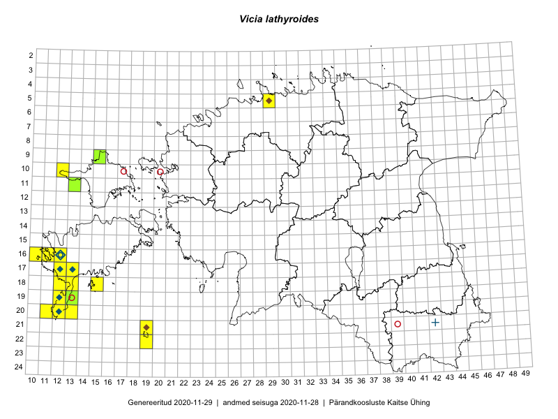

Vicia lathyroides
Uuendatud: 2016-12-08
Kaardile koondatud taksonid: Vicia lathyroides L.

Kaart põhineb 36 kirjel, neist vaatlusi 35 ja eksemplare 1. Taksonit on leitud 17 ruudust.
| Ruut | Vaatleja(d) | Vaatlusaeg | Kirje tüüp | Viide andmebaasikirjele |
|---|---|---|---|---|
| 09-15 | Peedu Saar, Toomas Kukk | 2015-05-27 | ruut/ala | vaata PlutoFis |
| 11-13 | Eeva-Maria Jeletsky, Tarmo Niitla | 2015-06-28 | ruut/ala | vaata PlutoFis |
| 17-13 | Mari Reitalu | 2015-05-06 | punkt | vaata PlutoFis |
| 17-13 | Mari Reitalu | 2015-05-06 | ruut/ala | vaata PlutoFis |
| 19-13 | Oliver Parrest | 2015-07-01 | ruut/ala | vaata PlutoFis |
| 19-13 | Oliver Parrest | 2015-07-01 | punkt | vaata PlutoFis |
| 20-13 | Mari Reitalu, Oliver Parrest | 2015-05-26 | ruut/ala | vaata PlutoFis |
| 16-12 | Mari Reitalu | 2015-07-27 | ruut/ala | vaata PlutoFis |
| 16-12 | Mari Reitalu | 2015-06-10 | ruut/ala | vaata PlutoFis |
| 16-12 | Mari Reitalu | 2015-06-10 | punkt | vaata PlutoFis |
| 18-12 | Mari Reitalu, Oliver Parrest | 2015-05-22 | ruut/ala | vaata PlutoFis |
| 20-11 | Mari Reitalu, Oliver Parrest | 2015-05-26 | ruut/ala | vaata PlutoFis |
| 20-12 | Mari Reitalu, Oliver Parrest | 2015-05-26 | ruut/ala | vaata PlutoFis |
| 18-13 | Mari Reitalu, Oliver Parrest | 2015-05-27 | ruut/ala | vaata PlutoFis |
| 16-11 | Mari Reitalu, Triin Reitalu | 2015-05-28 | ruut/ala | vaata PlutoFis |
| 16-10 | Sirje Azarov, Mari Reitalu | 2015-05-22 | ruut/ala | vaata PlutoFis |
| 16-10 | Sirje Azarov, Mari Reitalu | 2015-05-22 | punkt | vaata PlutoFis |
| 16-12 | Mari Reitalu, Triin Reitalu | 2015-04-30 | ruut/ala | vaata PlutoFis |
| 11-13 | Meeli Mesipuu, Timo Luhamäe | 2015-05-27 | ruut/ala | vaata PlutoFis |
| 11-13 | Meeli Mesipuu, Timo Luhamäe | 2015-05-27 | punkt | vaata PlutoFis |
| 16-12 | Triin Reitalu, Mari Reitalu | 2015-04-30 | punkt | vaata PlutoFis |
| 16-11 | Triin Reitalu, Mari Reitalu | 2015-05-28 | punkt | vaata PlutoFis |
| 18-15 | Oliver Parrest | 2015-05-23 | punkt | vaata PlutoFis |
| 19-12 | Oliver Parrest | 2015-05-17 | ruut/ala | vaata PlutoFis |
| 22-19 | Oliver Parrest | 2015-05-29 | punkt | vaata PlutoFis |
| 21-19 | Oliver Parrest | 2015-05-29 | punkt | vaata PlutoFis |
| 20-11 | Oliver Parrest, Mari Reitalu | 2015-05-26 | punkt | vaata PlutoFis |
| 20-12 | Oliver Parrest, Mari Reitalu | 2015-05-26 | punkt | vaata PlutoFis |
| 20-13 | Oliver Parrest, Mari Reitalu | 2015-05-26 | punkt | vaata PlutoFis |
| 20-13 | Oliver Parrest, Mari Reitalu | 2015-05-26 | punkt | vaata PlutoFis |
| 18-13 | Oliver Parrest, Mari Reitalu | 2015-05-27 | punkt | vaata PlutoFis |
| 18-13 | Oliver Parrest, Mari Reitalu | 2015-05-27 | punkt | vaata PlutoFis |
| 18-12 | Oliver Parrest, Mari Reitalu | 2015-05-22 | punkt | vaata PlutoFis |
| 17-12 | Mari Reitalu | 2016-05-10 | punkt | vaata PlutoFis |
| 17-12 | Mari Reitalu | 2016-05-10 | punkt | vaata PlutoFis |
| 09-15 | Peedu Saar, Toomas Kukk | 2015-05-27 | eksemplar | vaata PlutoFis |